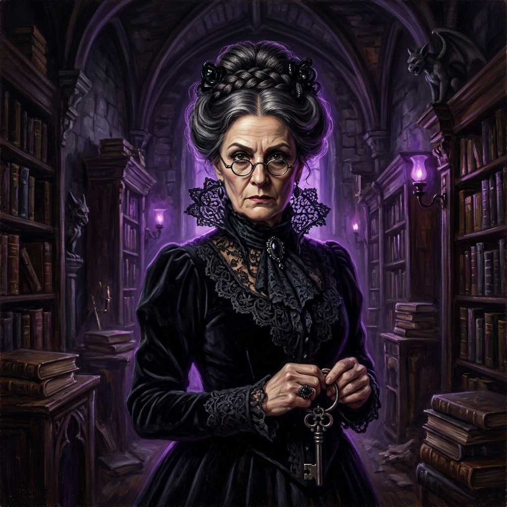
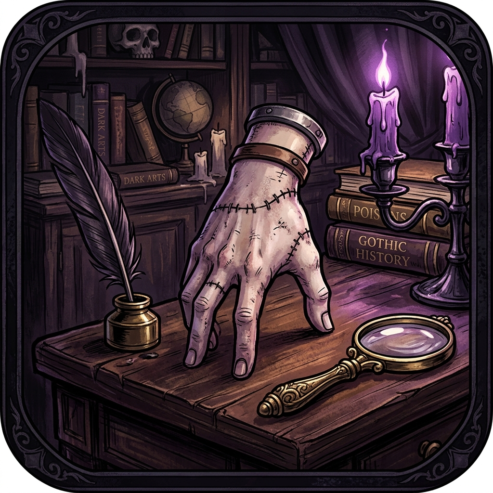
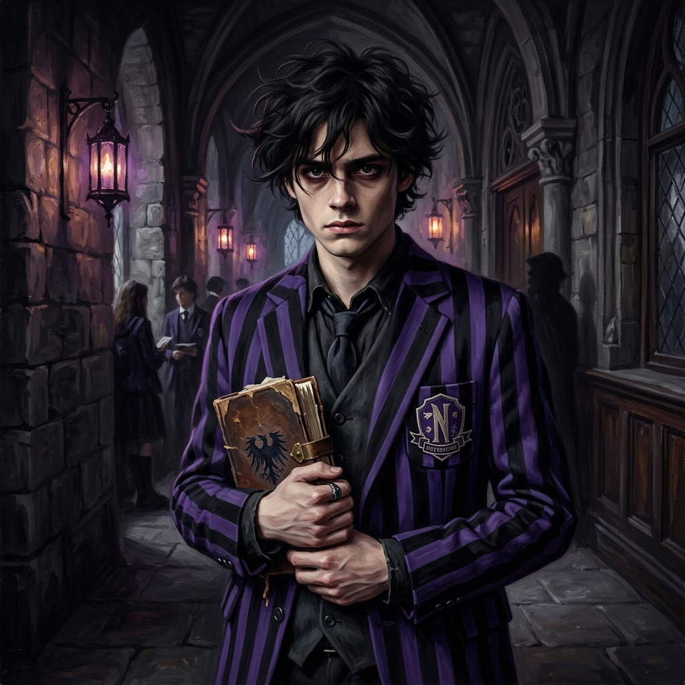
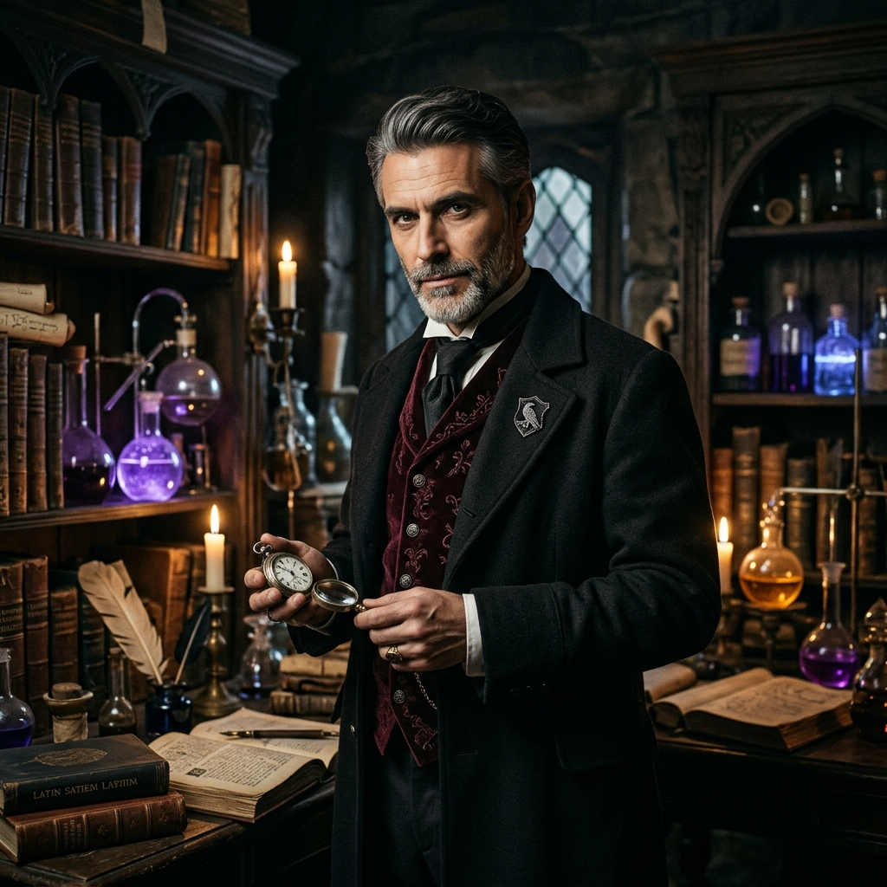
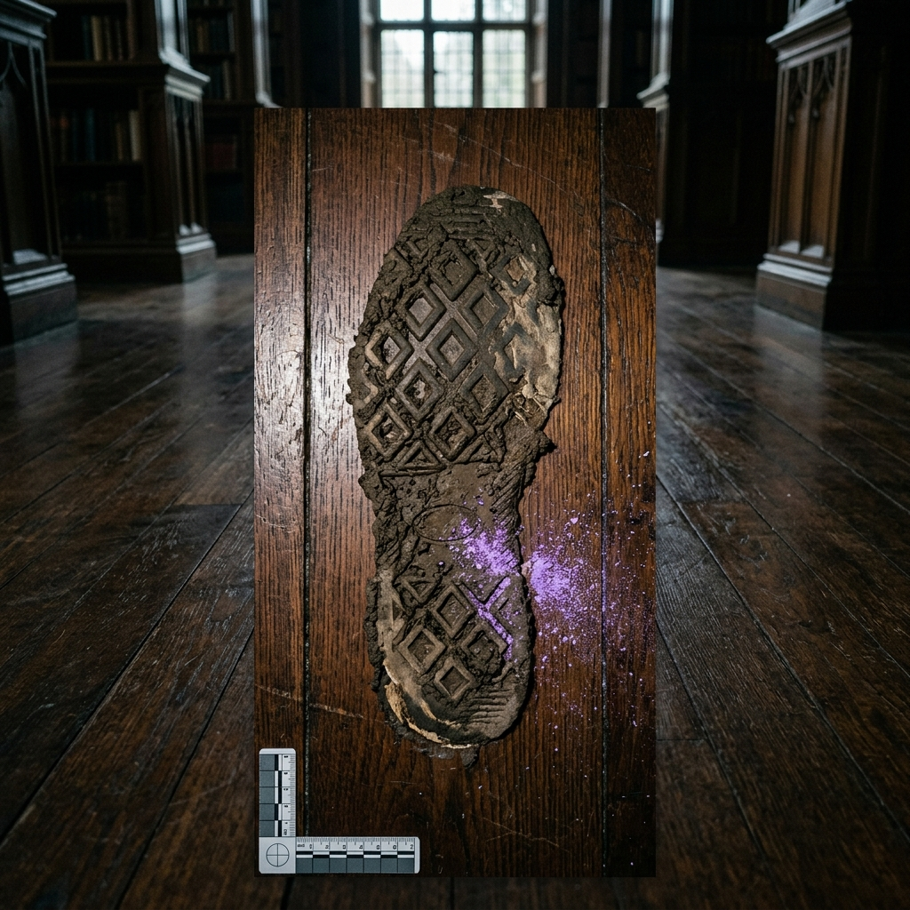
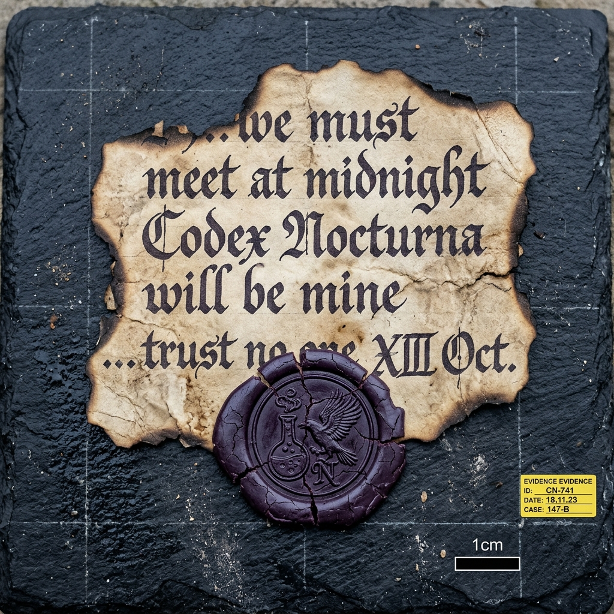
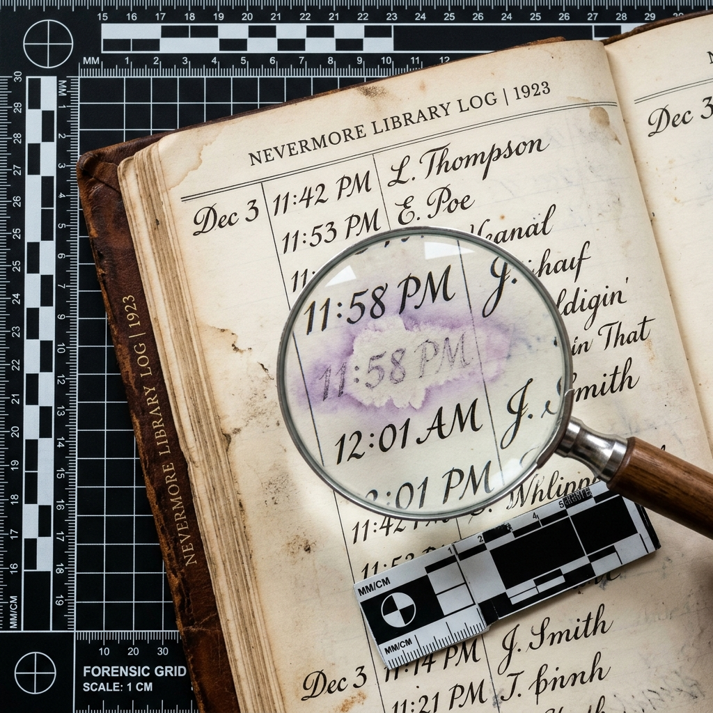

WEDNESDAY'S MIND
"Think Like Wednesday. Uncover What Others Cannot."
At exactly midnight, Nevermore's forbidden Codex Nocturna vanished from the restricted archives into the zero-gravity void. Three suspects were present. Each tells a different story. Wednesday suspects someone is concealing the dark truth. Your intelligence is your greatest weapon.
THE NEVERMORE ARCHIVAL DIRECTORY
Select a crime chamber or forensic department below to navigate directly into the investigation. Proceed at your own peril.
The 3D Void Library & Ancient Door
Step into the wall-less cosmic void. Anti-gravity books drift through space around the freestanding ancient gothic door. Inspect floating forensic clues in real-time 3D orbit.
Forensic Crime Lab & Clues Dossier
Access your active investigation dossier. Run chemical reagent tests, toggle 365nm UV blacklight analysis, and review legal contradiction matrices that break suspect alibis.
Evidence Notebook & String Pinboard
Review high-resolution microscopic photographs, toxic chemical profiles, and acoustic frequency analyses. Connect forensic clues to suspects on the classic detective corkboard.
Interrogation Chamber & Alibis
Cross-examine Nevermore faculty and outcasts. Confront Madam Vance, Dr. Graves, Marilyn Thornhill, Bianca Barclay, Xavier Thorpe, and Dr. Kinbott with contradictory forensic proof.
Thing's AI Cryptic Intelligence
Wednesday's faithful disembodied hand communicates through cryptic tapping, Morse code, and surgical forensic analysis. Ask for hint consultations, suspect motives, and cipher translations.
The High Inquisitor's Tribunal
Ready to solve the mystery? Deliver your formal accusation. Identify the true culprit, determine their criminal motive, cite decisive physical evidence, and face Wednesday's cold evaluation.
Crypt of Shadows & Jumpscare Lab
Summon terrifying specters, test lightning strikes, trigger thunderclaps, and listen to the real-time Web Audio API procedural FM synthesis engine and organ chords.
Wednesday's Forensic Methodology
Study the raven rules of forensic deduction: eliminate emotional noise, dissect physical contradictions, and remember that everybody lies—except soil chemistry and acoustic cleavage.
RULES OF GOTHIC FORENSIC DEDUCTION
"To solve a crime, one must become more ruthless than the perpetrator." — Wednesday Addams
Orbit the 3D Void Space
Never rely on flat surface impressions. Rotate the 3D camera across the cosmic void to inspect floating grimoires, discover glowing purple beacon relics suspended in zero-gravity, and analyze microscopic tags.
Physical Evidence Trumps Alibis
Suspects fabricate charming excuses. But nightshade chemical halos, Drosera carnivorous sap, 432 Hz acoustic stone fractures, and Italian cashmere threads in shattered glass do not lie.
Cross-Examine & Confront
Question every suspect in the interrogation chamber. When their testimony contradicts physical proof, deploy the evidence confrontation options to fracture their composure and expose their deceit.
The Weight of False Accusation
Accusing the wrong suspect without the decisive evidence will result in severe score deduction and public humiliation in Principal Weems' tribunal. Make certain your logic is infallible.
CRYPT OF SHADOWS & AUDIO LAB
Experience the occult atmosphere of Nevermore. Trigger sudden jumpscares, summon violent thunderclaps, and control the Web Audio API synthesis engine.
The Restricted Archive
Inspect the library in 3D. Click the glowing purple beacons to analyze forensic clues.
EVIDENCE & CONSPIRACY BOARD
Review your collected physical evidence, correlate forensic properties, and connect clues with suspects on the string pinboard.
NEVERMORE FORENSIC CRIME LABORATORY
Advanced Spectrometry • Chemical Reagent Testing • 365nm UV Blacklight Scanner
📓 Detective Investigation Log & Personal Notes
● Auto-Saved To LocalStorageSUSPECT INTERROGATIONS
Interrogate the three persons of interest present at Nevermore during the midnight disappearance. Confront them with collected physical clues.

Madam Thalia Vance
Strict, protective guardian of Nevermore Academy’s oldest manuscripts.
⚖️ Select Inquiry or Confrontation:
THING'S INTELLIGENCE
Wednesday's loyal, sharp-witted companion. Consult Thing for forensic breakdowns, psychological alibi checks, and subtle deductive guidance.

Thing (Addams Intelligence Engine)
THE FINAL VERDICT
Synthesize your clues, identify the perpetrator, and present undeniable evidence to solve the mystery of the Codex Nocturna.
WHO STOLE THE ANCIENT BOOK?
Review your reasoning carefully. Wednesday does not tolerate careless accusations.
Madam Thalia Vance
Chief Archivist
Julian Crane
Nocturnal Student
Dr. Arthur Graves
Professor of Alchemy
Diamond-Tread Footprint
Orthopedic size 11 boot + violet potassium residue

Charred Torn Letter
Raven-flask wax seal + midnight rendezvous

Altered Library Register
11:58 PM chemical erasure + "A.G." ghost ink
"Emotion Has Clouded Your Judgement."
Review your evidence carefully before Principal Weems hears of this.
EXCELLENT DETECTIVE WORK. WEDNESDAY APPROVES.
"Most people flee the shadows. You dismantled them methodically. Dr. Arthur Graves has been apprehended in his alchemy laboratory with the Codex Nocturna in his possession."
1. THE FOOTPRINT EVIDENCE:
The size 11 diamond grid tread matched Dr. Graves’ bespoke orthopedic laboratory boots. The violet chemical residue was potassium permanganate from his mandrake extraction bench.
2. THE CHARRED TORN LETTER:
The cracked wax seal featured the raven clutching an alchemy crucible—the registered signet of Dr. Graves’ Dark Antiquities office.
3. THE ALTERED LIBRARY REGISTER:
Dr. Graves utilized his master faculty clearance to enter the archives at 11:58 PM. He took the Codex Nocturna, then applied an acidic solvent from his lab to dissolve his own signature and fabricate an alibi.